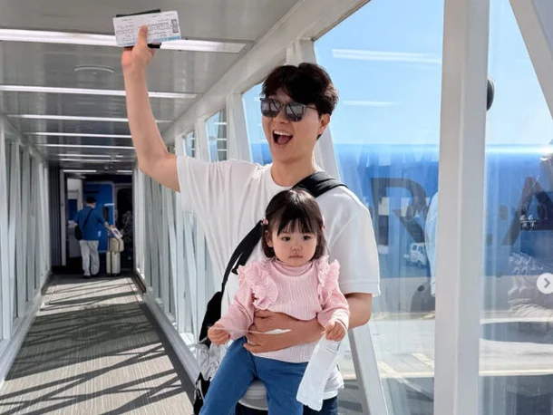

박수홍 가족 비행기 논란, 딸 울음에 "내릴게요"…승객들 1시간 대기 : 네이트 연예

복수의 온라인 커뮤니티를 중심으로 지난 23일 인천국제공항을 출발해 괌으로 향할 예정이던 대한항공 KE415편이 유명 방송인 가족으로 인해 약 1시간 지연됐다는 글이 확산되고 있다.
해당 글에는 탑승객으로 추정되는 이가 “박수홍 가족 때문에 지연이 발생했다”고 전한 내용이 담겼다.
글에 따르면 국제선 탑승 후 아이의 울음이 멈추지 않자 가족 측은 하차 의사를 전달했고,
이에 따라 위탁 수하물을 항공기에서 내리는 작업이 진행됐다.
그러나 이후 아이가 울음을 그치자 가족은 다시 탑승하겠다는 의사를 밝혔고,
항공사 측이 재탑승을 허용하면서 수하물을 다시 싣는 절차가 이어졌다는 것이다.
이 과정에서 승객들에게는 사과가 있었다는 전언도 함께 전해졌다.
글쓴이는 수하물을 확인하는 직원들의 모습이 담긴 사진과 함께 상황을 전했으며,
해당 항공기는 예정 시각보다 늦은 오전 11시 7분쯤 이륙한 것으로 알려졌다.
항공업계에 따르면 탑승 후 하차 의사를 번복하는 경우 보안 절차상 수하물 하기·재탑재 작업에만 최소 1~2시간이 소요될 수 있어,
다른 승객들의 불편은 물론 항공사에도 추가 비용이 발생하는 것으로 알려졌다.

애데리고 해외 왜가는지 모르겠네
국내를 가던가 맡기고 가던가